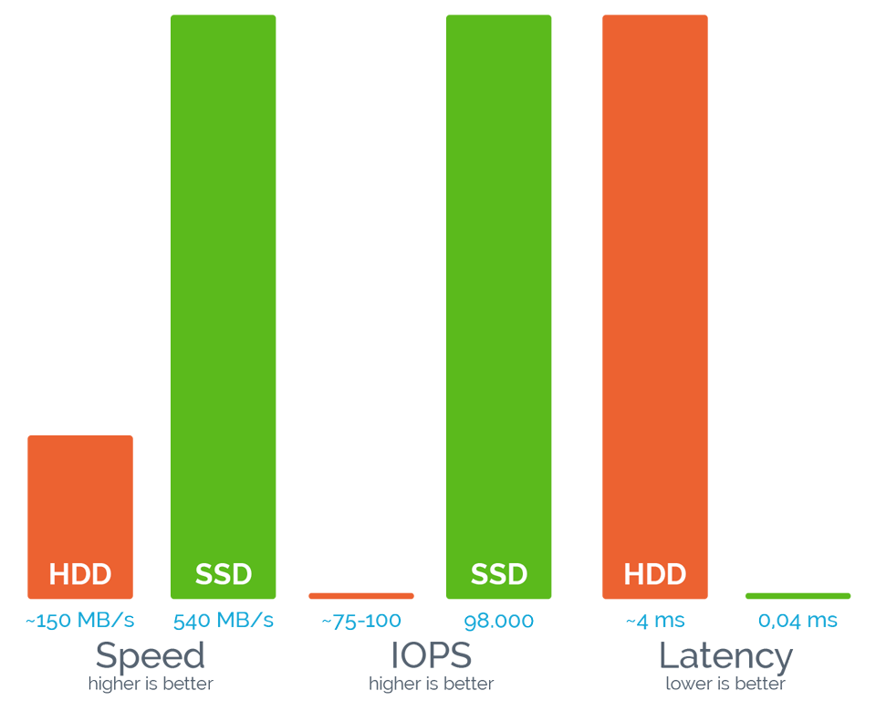
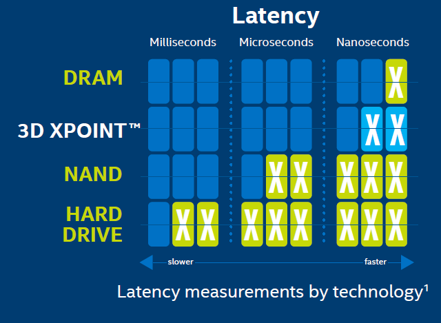

Будущее принадлежит флэш-накопителям (SSD): они способны обеспечить гораздо более высокие скорости передачи данных, чем традиционные жесткие диски (HDD), и при этом становятся сравнительно недорогими. Широкое внедрение SSD может привести к существенным изменениям в архитектуре ЦОД и вычислительных систем.
Эти накопители построены на использовании энергозависимой памяти (такой же, какая используется в ОЗУ персонального компьютера) наподобие RAM drive и характеризуются сверхбыстрыми чтением, записью и поиском информации. Основным их недостатком является чрезвычайно высокая стоимость за единицу объёма. Используются в основном для ускорения работы крупных систем управления базами данных и мощных графических станций. Такие накопители, как правило, оснащены аккумуляторами для сохранения данных при потере питания, а более дорогие модели — системами резервного и/или оперативного копирования. Примерами таких накопителей являются I-RAM и серия HyperDrive (последние известны в Европе как ACARD ANS-9010 и 9010BA).
Будущее на грани с настоящим
Задачи
Серверы и системы хранения с флэш-накопителями SSD позволяют решать самые ресурсоемкие задачи, такие как поиск в крупных базах данных, оперативная обработка транзакций, бизнес-аналитика, обработка больших данных и крупномасштабная виртуализация. SSD имеют все шансы заметно потеснить HDD в серверах и системах хранения данных, становятся ключевым компонентом гиперконвергентных систем. К 2020 году может появиться флэш-накопитель емкостью 40 Тбайт, практически решена проблема долговечности SSD.
SSD-хостинг
В условиях стремительного роста объемов данных хорошим выходом становятся облачные хранилища. Использование в них накопителей SSD позволяет провайдеру гарантировать SLA в IOPS.
Завоевывает популярность SSD-хостинг — виртуальный хостинг с использованием массива из твердотельных накопителей. VPS создаются на высокопроизводительных аппаратных RAID-10 массивах быстрых SSD.
На серверах хостинга обычно применяют SSD с высокой производительностью, функцией защиты данных и большим ресурсом перезаписи. Это позволяет в три раза увеличить скорость чтения/записи, чтение блоков по 512 Кбайт выполняется в 10, а блоков по 4 Кбайт — в 50 раз быстрее, производительность в IOPS возрастает в 400 раз больше. Максимальную скорость и производительность SSD показывают для хостинга интернет-магазинов и других сайтов, использующих базы данных.

Твердотельные диски заставляют веб-сайты «летать». Высокую скорость оценят как пользователи, так и поисковые системы. Последние учитывают параметры загрузки страниц в их рейтингах.
В ближайшие годы накопители HDD останутся самым экономичным решением для хранения данных. К 2024 году их емкость может вырасти в 10–20 раз. Но если прогресс в разработке SSD продолжится прежними темпами, то через несколько лет жестким дискам придется столкнуться с жесткой конкуренцией, особенно, если цены на SSD значительно снизятся.
Твердотельная память найдет место в центрах обработки данных. Рост объемов транзакций, облачные вычисления, аналитика больших данных и рабочие нагрузки следующего поколения потребуют более высокой производительности. SSD будут использоваться для хранения потоковых данных, пакетной обработки, для задач аналитики, систем управления базами данных и во многих других приложениях, вытесняя HDD.
3D-XPoint корпорации Intel (Intel Optane)
3D-XPoint стал одним из потенциальных претендентов на замену NAND и единственной альтернативной технологией, находящейся в массовом производстве. Optane SSD обеспечивает аналогичную производительность для накопителей NAND. Однако задержки составляют примерно половину времени задержки от NAND (10 микросекунд против 20) и устройство обладает большей выносливостью (примерно в три раза).

Первые Optane SSD дебютировали как отличные дополнения для решений на чипах от Интел Kaby Lake и Coffee Lake. Тем не менее, решения Optane не особо дешевы, чтобы напрямую конкурировать NAND, которая выигрывает от существенной экономии за счет масштаба. Хотя, это может и измениться в будущем, NAND, скорее всего, останется доминирующей технологией в течение ближайших 3-4 лет.